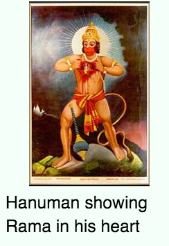

Welcome to Wikipedia,
the free encyclopedia that anyone can edit.
5,106,688 articles in English
- Arts
- Biography
- Geography
- History
- Mathematics
- Science
- Society
- Technology
- Portals
From today's featured article
Final Fantasy Type-0 is a Japanese video game produced by Square Enix in 2011 for the PlayStation Portable (PSP). It is an action role-playing game where players take the role of Class Zero, a group of fourteen students skilled in magic who are recruited by their superiors into a war between the four nations of Orience. The players also engage in large-scale strategy-based battles on the world map, and have access to a multiplayer option during story missions and side quests. Developed by the same staff as Crisis Core: Final Fantasy VII, Type-0 was designed as a departure from the traditions of the Final Fantasy series with its action-based gameplay and dark storyline. It was originally planned for both PSP and mobile, but the mobile version was cancelled in 2008. The game met with commercial success in Japan, and favorable reviews both in Japan and overseas. Plans for international versions were halted due to the flagging PSP market in the Western world. The first non-Japanese version of Type-0 was a fan translation into English in 2014. A high-definition remaster was released worldwide in 2015. (Full article...)
Recently featured: Hurricane Charley (1986) California State Route 78 Sarcoscypha coccinea
Did you know...
In the news
Ongoing events: Zika virus outbreak European migrant crisis
Recent deaths: Hilary Putnam Lloyd Shapley Iolanda Balaș
In the news
Ongoing events: Zika virus outbreak European migrant crisis
Recent deaths: Hilary Putnam Lloyd Shapley Iolanda Balaș